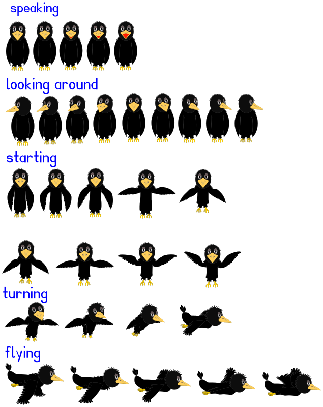
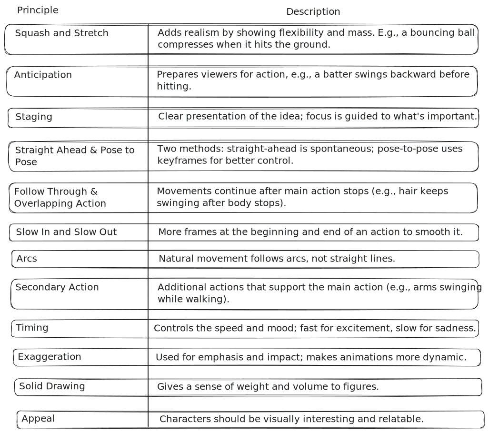
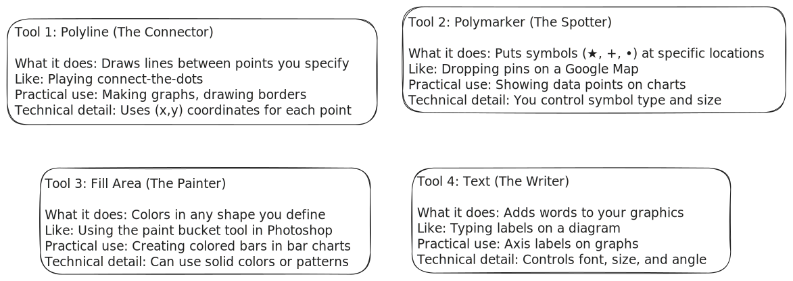

Unit Structure
Computer Graphics: Animation and GKS Standards
|
├── 1. Animation
│ ├── Introduction to Animation
│ ├── Principles of Animation
│ ├── Types of Animation
│ └── Types of Animation Systems
│ ├── Scripting Systems
│ ├── Procedural Systems
│ ├── Representational Systems
│ └── Stochastic Systems
│
└── 2. GKS (Graphical Kernel System) Standards
├── GKS Primitives
│ ├── Polyline
│ ├── Polymarker
│ ├── Fill Area
│ └── Text
└── GKS Workstation and Metafiles
- Computer Graphics isn’t just about drawing lines and shapes — it's also about bringing visuals to life
and standardizing how graphics are created across systems. In this unit, we focus on two exciting areas:
Animation and GKS Standards.
- We begin with Animation, where you’ll explore the basics of how motion is created on screen. You’ll
learn about the core principles of animation (like timing and squash & stretch), the different types of
animations used in games, movies, and interfaces, and finally, the various animation systems — including
scripting-based, procedural, representational, and stochastic systems, each with its own way of
controlling how things move and behave.
- Next, we dive into the Graphical Kernel System (GKS) — one of the first standards for computer graphics.
You’ll understand how GKS defines basic building blocks called primitives, like polylines, polymarkers,
filled areas, and text. We’ll also look at how GKS handles workstations and metafiles, which allow
graphics to be rendered across different platforms in a consistent way.
ANIMATION
- Animation is a process of displaying still images in a rapid sequence to create the illusion of
movement. In computer graphics, it involves programming or designing movement by
manipulating images using various techniques.
- A person who creates animations is called animator.
He use various computer technologies to capture the pictures and then
to animate these in the desired sequence.
Example Of Animation

- Animation includes all the visual changes on the screen of display devices these are: change of
shape, size, color, structure, angle.
Application of animation
-
Education and Training: Animation is used in school, colleges and
training centers for education purpose. Flight simulators for aircraft
are also animation based.
- Entertainment: Animation methods are now commonly used in
making motion pictures, music videos and television shows, etc.
- Computer Aided Design (CAD): One of the best applications of
computer animation is Computer Aided Design and is generally
referred to as CAD. One of the earlier applications of CAD was
automobile designing. But now almost all types of designing are
done by using CAD application, and without animation, all these
work can't be possible.
- Advertising: This is one of the significant applications of computer
animation. The most important advantage of an animated
advertisement is that it takes very less space and capture people
attention.
- Presentation: Animated Presentation is the most effective way to
represent an idea. It is used to describe financial, statistical,
mathematical, scientific & economic data.
Principles of Animation

Types of Animation
-
2D Animation
- The classic flat animation style (just width and height)
- Used in Disney classics, Saturday morning cartoons, and mobile games
- Works by showing slightly different drawings in quick succession
- Popular tools: Adobe Animate (pro), Pencil2D (free)
- Perfect for educational videos and explainer content
-
3D Animation
- Adds depth (Z-axis) to make objects look real
- Used in Pixar movies, video games, and product visualizations
- Four main steps: modeling → rigging → animating → rendering
- Industry tools: Blender (free), Maya, 3DS Max
- Creates realistic lighting and textures
-
Stop-Motion Animation
- Real objects moved slightly between photographed frames
- Gives that charming handmade look (think Wallace & Gromit)
- Types include: Claymation (clay), Puppet (dolls), Cut-out (paper)
- Time-consuming but creates unique physical presence
- Often used in indie films and music videos
-
Motion Graphics
- Animation focused on text and simple shapes
- Common in ads, YouTube intros, and explainer videos
- Great for visualizing data and abstract concepts
- Often combined with voiceovers for maximum clarity
- Tools: After Effects, Premiere Pro, online animators
-
Keyframe Animation
- Animator sets important poses (keyframes)
- Software fills in the movement between (tweening)
- Saves time while keeping control over movement
- Used for everything from bouncing balls to complex fights
- Fundamental to most digital animation
-
Path Animation
- Objects follow predefined routes or trajectories
- Perfect for cars driving, birds flying, or camera moves
- Ensures smooth, repeatable motion paths
- Can be combined with other animation types
- Often used in technical animations and simulations
-
Morphing
- Smooth transformation between shapes/images
- Made famous in 90s movies (Terminator 2 effects)
- Now used for subtle transitions in apps and videos
- Software calculates all the in-between stages
- Creates eye-catching visual metaphors
Types of Animation Systems
-
Scripting Systems
- Animation controlled through programming code
- Offers maximum flexibility for complex animations
- JavaScript powers web animations and interactive elements
- Python scripts automate animations in Blender
- Maya uses MEL (Maya Embedded Language) for rigging and automation
- Great for repetitive tasks and custom animation tools
-
Procedural Animation
- Generates movement automatically using mathematical rules
- Perfect for natural, unpredictable motions like cloth or water
- Dynamically adjusts based on environment and physics
- Saves memory by calculating movement in real-time
- Used for hair physics, ocean waves, and particle systems
- Seen in games for realistic environmental effects
-
Representational Animation Systems
- Based on digital models of real-world physics
- Uses bone/joint systems for character movement
- Inverse kinematics lets feet stay planted while moving
- Constraint systems prevent impossible movements
- The standard for modern 3D character animation
- Used in films, games, and virtual reality
-
Stochastic Animation
- Adds controlled randomness for natural effects
- Simulates unpredictable elements like fire or dust
- Uses probability models to vary movements
- Makes crowd scenes look more organic
- Essential for weather effects in games
- Helps avoid the "too perfect" look in animations
GKS (Graphical Kernel System) - The Universal Drawing Language
1. Why We Needed GKS
Back in the 1970s-80s, every computer brand had its own way of drawing graphics. This was like:
- Every printer speaking a different language
- Monitors understanding only their manufacturer's commands
- Programmers rewriting graphics code for each device
The International Organization for Standardization (ISO) created GKS as an
official standard (like how USB or PDF are standards today) so that:
- One program could work on all devices
- Graphics would look the same everywhere
- Developers could learn just one system
2. The GKS Toolbox (Primitives)
GKS gives programmers four basic tools that combine like LEGO to make complex images:

3. Workstation Concept (The Magic Translator)
GKS's clever solution to the device problem:
- What it is: A software layer that translates GKS commands to what each device understands
- Like: A universal remote that works with all TV brands
- Types:
- Output: For screens/printers (showing graphics)
- Input: For mice/keyboards (interacting with graphics)
- Combined: Devices like touchscreens
- Practical benefit: Write code once → runs on any supported device
4. Metafiles (The Replay Function)
How GKS saves and shares drawings:
- What they are: Digital recordings of drawing commands
- Like: Saving a list of "how to draw" instructions rather than a photo
- Why better than images:
- Can edit later (change colors, text)
- Smaller file size
- Perfect quality at any zoom level
- Practical use: Saving vector graphics (like company logos)
GKS in Today's World
| Concept |
Modern Equivalent |
Where You See It |
| GKS Primitives |
HTML Canvas/SVG shapes |
Web charts, mobile apps |
| Workstation |
Graphics drivers |
Games adjusting to your GPU |
| Metafiles |
PDF vector graphics |
Scalable logos, digital art |